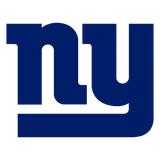

램스 · 휴식 주간 · 11/18 20:00 KST
램스 · 휴식 주간 · 11/18 20:00 KST IND
IND HOU
HOU MIA
MIA BUF
BUF NO
NO CHI
CHI TEN
TEN DAL
DAL TB
TB DET
DET ARI
ARI KC
KC PIT
PIT PHI
PHI BAL
BAL CAR
CAR NYJ
NYJ LAC
LAC LV
LV DEN
DEN JAX
JAX
NYG MIN
MIN SF
SF CIN
CIN WAS
WAS브라이언 쇼튼하이머 감독은 크리스천 파커가 수비 코디네이터 직함은 유지하지만, 경기 당일 수비 플레이콜은 마이크 페티니가 맡는다고 밝혔어요. 전날 검토 중이던 역할 조정이 확정된 셈이에요.
자세히 보기 → 램스 · 휴식 주간 · 11/18 20:00 KST
램스 · 휴식 주간 · 11/18 20:00 KST 이글스 · QB · 11/19 03:57 KST
이글스 · QB · 11/19 03:57 KST 타이탄스 · 부상 · 11/19 04:45 KST
타이탄스 · 부상 · 11/19 04:45 KST 제츠 · 부상 · 11/19 06:09 KST차저스 · 경기 결과 · 11/17 13:30 KST
제츠 · 부상 · 11/19 06:09 KST차저스 · 경기 결과 · 11/17 13:30 KST 카우보이스 · 코치 · 11/18 02:00 KST
카우보이스 · 코치 · 11/18 02:00 KST 돌핀스 · 부상 · 11/18 07:30 KST
돌핀스 · 부상 · 11/18 07:30 KST 텍산스 · 부상 · 11/18 01:59 KST
텍산스 · 부상 · 11/18 01:59 KST 레이더스 · 일정 · 11/18 04:51 KST
레이더스 · 일정 · 11/18 04:51 KSTNFL이 12주차 NBC 선데이 나이트 풋볼 경기를 패트리어츠-차저스에서 레이더스-브라운스로 바꿨어요. 패트리어츠-차저스 경기는 오후 4시 5분(ET) 시간대로 옮겨져요.
 타이탄스 · 부상 · 11/18 07:06 KST
타이탄스 · 부상 · 11/18 07:06 KST올봄 4년 7천만 달러에 계약한 완데일 로빈슨이 발목 부상으로 IR에 올라 최소 4경기를 쉬어요. 1라운드 신인 WR 카넬 테이트도 어깨 부상으로 빠져 있어 타이탄스 리시버진이 크게 얇아졌어요.
 라이온스 · 부상 · 11/18 01:35 KST
라이온스 · 부상 · 11/18 01:35 KST만성 무릎 부상으로 PUP 명단에서 시즌을 시작한 커비 조지프가 일요일 버커니어스전에서 시즌 데뷔할 계획이라고 댄 캠벨 감독이 밝혔어요. 캠벨 감독은 에이든 허친슨 부상에도 세리머니를 금지하지는 않겠다고 했어요.
램스 · 부상 · 11/17 11:37 KST램스 주전 센터 콜먼 셸턴이 햄스트링을 다쳐 4~6주 동안 전열에서 이탈할 전망이에요. 램스는 이번 주 휴식 주간을 보낸 뒤 11/26 (목) 10:00 KST 패커스를 홈으로 불러요.
 스틸러스 · 사건 · 11/18 07:23 KST
스틸러스 · 사건 · 11/18 07:23 KST피츠버그 경찰이 8월 말 이헤아나코르의 집에 침입해 20만 달러 넘는 보석과 명품을 훔친 혐의로 3명에게 체포영장을 발부했어요. 미 연방보안관실과 함께 캘리포니아에서 신병 확보에 나섰어요.
 라이온스 · 부상 · 11/17 04:24 KST
라이온스 · 부상 · 11/17 04:24 KST뮌헨 경기에서 색 세리머니 도중 오른쪽 무릎을 다친 에이든 허친슨이 1차 검사 결과 전방십자인대(ACL) 파열 진단을 받아 남은 시즌을 뛸 수 없게 됐다고 NFL 네트워크가 전했어요. 라이언스 수비의 핵심 전력이 빠지는 큰 타격이에요.
 GB@LAR
GB@LAR